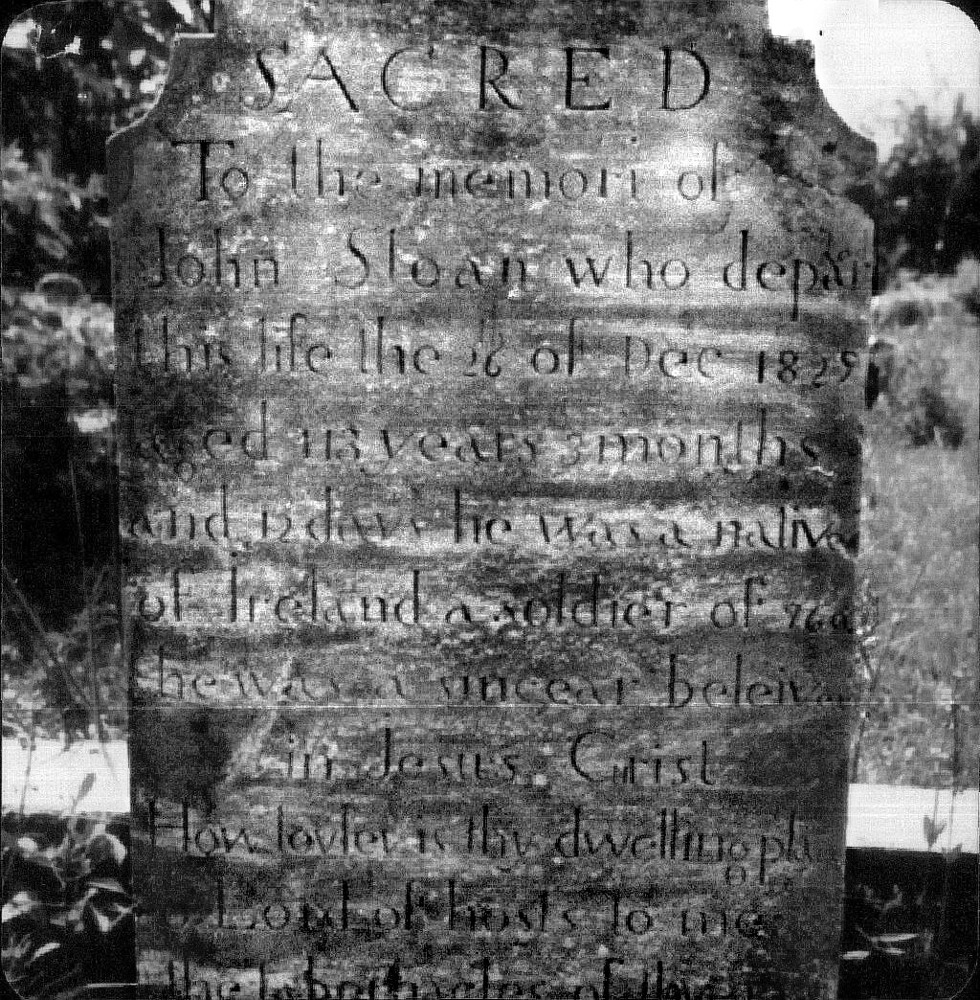
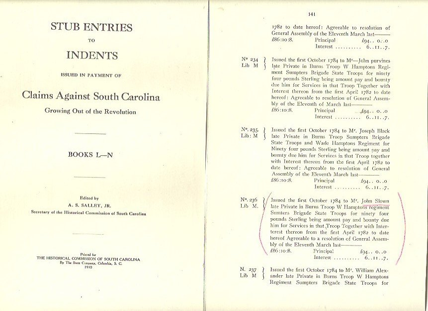
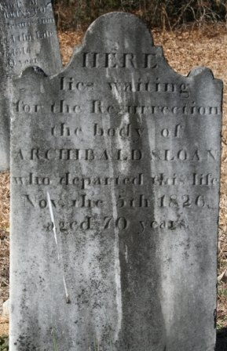
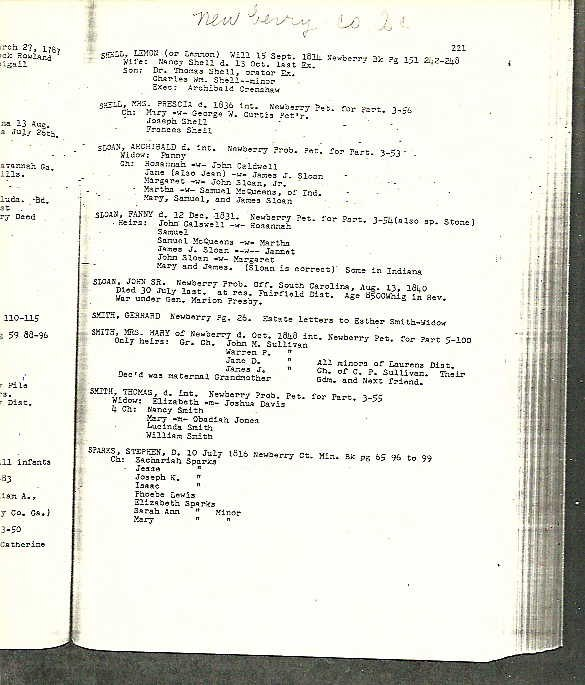
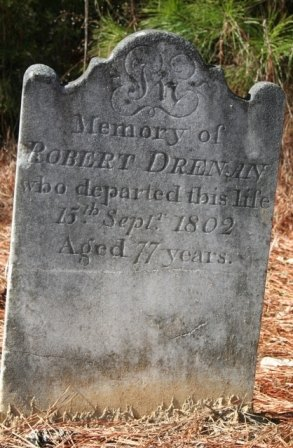
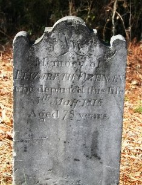
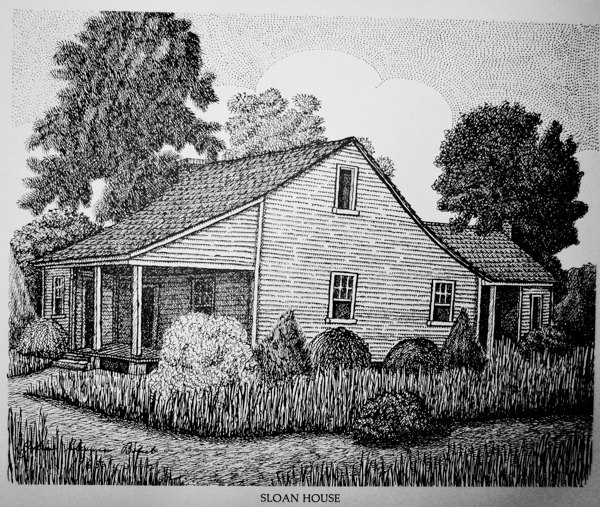
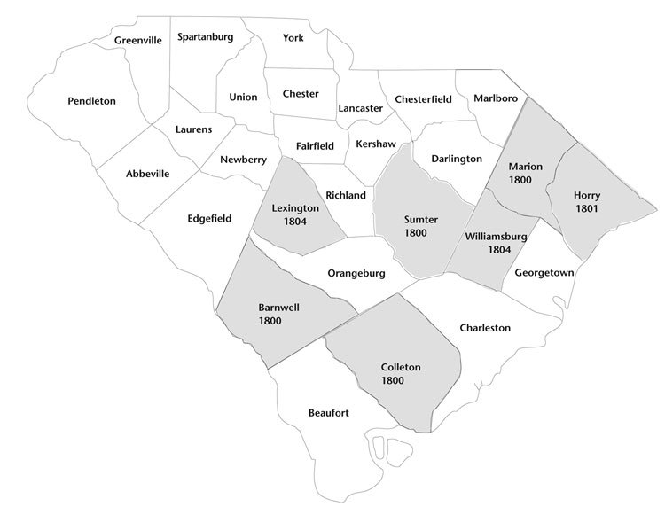

Sacred to the memori of John Sloan who departed this life the 26 of Dec 1829 aged 113 years 3 months and 12 days. He was a native of Ireland, a soldier of 76. He was a sincear believer in Jesus Christ. Gravestone, Old Fields (Ora) Associate Reformed Presbyterian churchyard, Laurens County, S.C.
Everything we know about this John Sloan comes from that stone, a two-line death notice, a few census tallies, and the memories of two of his grandchildren — written down seventy-five and more years after he died, by people who didn’t agree with each other. It’s a wonderful story. Parts of it are even true.

The legendFour stalwart sons of Erin
Captain James Park Sloan, a Confederate officer and a grandson, pasted this into the family scrapbook late in the 1800s:
Early in 1700, four stalwart sons of Erin, County Antrim, Scotch Irish, landed in this country, and settled in Newberry Dist. They were Richard (Dickie), Archibald, Robert and John. The last was your g. g. father. … These four brothers served through the War of Independence. Your g. g. father was wounded near Musgrove Mill in what was then known as seige of 96'. He carried the ball with him through his long life. … I just remark your g. g. f. was an inveterate pipe smoker and took his toddy every morning.
J. P. Sloan, family scrapbook (“Sloan-Blakely” Bible records)
He goes on: John came over with a young wife, two children and “a little Irish Lassie.” Smallpox killed the wife and both children and left him “severly marked.” Years later, at fifty-eight, “he led this Irish Lassie (Jennet McNeere) at the age of 13, to Hymen’s Altar,” and they raised eleven children. Brother Dickie, he adds, married his third wife at 105 and died at 107. “They were all Seceders and genuine Scotch Irish.”
Another grandchild, Rebecca Boyd Sloan Shands, wrote her own account in her seventieth year. In her version John was the eldest son, and he left Ireland because the law required every man of twenty-one to swear allegiance to the King and serve in his army:
Grandfather John Sloan, the oldest son of the family refused to do either and his twenty-first birthday drew near, knowing he must obey the law or go to prison, fled the country and landed at Charleston, South Carolina, making his way to Newberry County, later to Laurens County.
Rebecca Sloan Shands, “Autobiography of the Sloan Family”
His brother Robert, she says, had himself smuggled aboard ship in a coffin, was shipwrecked at Halifax, and took six months to reach Newberry — coffin and all. She also takes on the best-known tale about the old man, that he married at a hundred and vaulted over his horse on the way to the wedding:
That is not true … Aunt Jane told me that some such incident happened at his second marriage; some of friends guyed him about being so old and wanted to help him mount. He offered to bet he could jump on his horse. Someone took him up and he laid his hand on his horse’s neck and vaulted over, but he was not 100. The record says he was 56, just the prime of life for him. I don’t know if any such incident ever happened or not; but it was told so much that his grandchildren believed it.
Rebecca Sloan Shands
The arithmeticWas he really 113?
Probably not. The stone says it, the Charleston paper said it (“in the 114th year of his age”), and Mrs. Shands insisted “his age is well established as any fact can be.” But the family’s own numbers require him to have fathered eleven or twelve children between the ages of about seventy and ninety-one — J. P. Sloan says flatly that he was “91 y, 11 m & 10 d” when the last was born. Our own John, born in December 1793, would have had a seventy-seven-year-old father. His brother Archibald was born in 1756, forty years after him. And the 1810 census of Laurens shows his household with five children under ten.
A man born around 1740 or 1750, whose age got stretched a little every year he outlived his neighbors, fits everything much better: the children, the brothers, the war. That’s a guess. No document settles it.
“In Laurens district, on the 25th of December last, Mr. John Slone, in the 114th year of his age. He was a native of Antrin co., Ireland, a Soldier of 76.” — Charleston Observer, 3 April 1830.
South Carolina’s ledger of Revolutionary War claims, entry No. 236: “Issued the first October 1784 to Mr. John Slown late Private in Burns Troop W Hamptons regiment Sumters Brigade State Troops for ninety four pounds Sterling being amount pay and bounty due him.” There was more than one John Sloan in the back country, so this entry may or may not be ours. The D.A.R., for its part, credits John Sloan of Laurens (1716–1829) with mounted-militia service on the strength of another entry in the same ledgers: Book L, No. 184.
The 1790 census of Newberry lists John “Stone” a few doors from James and Thomas McNeer — his wife’s people — and “Arch’d Slone” three names from Robert Drennan, Archibald’s father-in-law.

1780–81Musgrove Mill and Ninety-Six
The back country of South Carolina saw some of the ugliest fighting of the Revolution — neighbor against neighbor, Whig against Tory. The battle at Musgrove’s Mill on the Enoree River was fought in August 1780, a few miles from where the Sloans lived; the siege of the British fort at Ninety-Six came the following spring. One grandson says John was wounded near Musgrove Mill and carried the ball for life. An 1876 Charleston newspaper says he was taken prisoner there. Both could be half right. What’s certain is that “a soldier of 76” was the thing his family chose to carve on his stone.
The other Sloan lineArchibald Sloan and Fanny Drennan

We descend from these South Carolina Sloans twice. Our John Sloan (born 1793) married Margaret Sloan — and Margaret’s father was Archibald Sloan of Newberry, who died in November 1826 and lies under a stone that begins “Here lies waiting for the Resurrection.” Her mother was Frances “Fanny” Drennan, daughter of Robert Drennan, who died in 1802 at seventy-seven, and left a will naming “my Daughter fanny Sloan.” One of the men who witnessed that will was a blacksmith named Samuel McQuerns — remember him; he turns up in Indiana.
For years nobody could connect the Indiana Sloans to anyone in Carolina. The break came in 2017 with a single typed page of probate abstracts that somebody’s mother had copied decades ago and somebody’s daughter had uploaded to Ancestry:

Ben then sent to the state archives in Columbia for the estate files themselves — nearly a hundred large pages of old handwriting — which name Margaret, wife of John Sloan, and Martha, wife of Samuel McQuerns, as Archibald and Fanny’s heirs. Fanny’s papers, a few years later, show an agent collecting their shares for them, “since they were in Indiana.”


About 1828–1831Why they left
The Sloans were Seceders — Associate Reformed Presbyterians, the strictest sort of Scotch-Irish psalm-singers, who worshipped at Cannon’s Creek and Prosperity in Newberry. Their church was turning against slavery. In 1811 its synod declared it “a moral evil to hold negroes in bondage”; in 1831 it barred slaveholders from communion altogether. Whole congregations picked up and moved to the free states of Ohio, Indiana and Illinois. When the synod’s messenger carried its letter into the Carolinas in 1840, a mob gave him “Lynch law.”
Captain J. P. Sloan — who, remember, fought for the Confederacy and had no reason to flatter a Yankee cousin — put it this way:
John married quite young to his cousin (Sloan) in Newberry. And being prejudiced against our institution of slavery, picked himself up and went to Indiana, Lincoln Co. To diverge a little, I found some of his family when I was a prisoner (North). They were not friends of ours in that great struggle. One of his grand-sons, if he was at his post at the time, helped to burn Columbia.
J. P. Sloan, family scrapbook
There’s no Lincoln County in Indiana. There is a Clinton County — and in it, by 1832, a John Sloan from South Carolina, married to a Margaret Sloan, serving as an elder of a brand-new Associate Presbyterian church. Money may have helped too: Archibald died in 1826, his estate paid out to his daughters, and within a few years both couples were buying government land in Indiana.
A scouting trip?
A Newberry newspaper columnist, Charlie Senn, left a vivid account of his ancestor Samuel Sloan riding north with a dozen neighbors “to spy out the land,” buying acreage in Illinois, wintering his family on an abandoned farm just across the Ohio, rafting a corn crop to New Orleans — and then giving it all up and going home to Cannon’s Creek after wolves chased the children to the cabin door. Senn cites no sources and some of his details don’t hold up, but if there’s anything to it, the Newberry Sloans had seen the Northwest with their own eyes before John and Margaret ever loaded a wagon.

